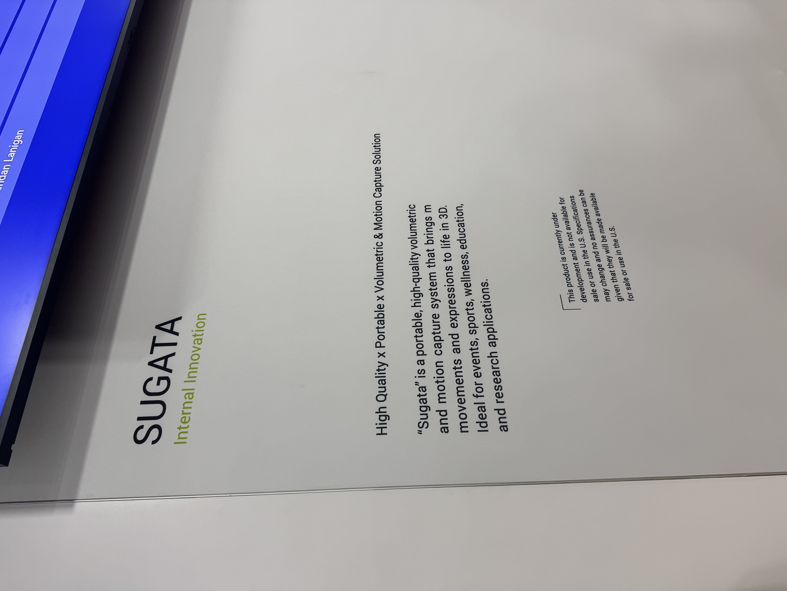

Four years ago I wrote my first post about volumetric capture. I haven't stopped running into it since. Different scales, different industries, different form factors, but the same core idea: capture the real world in three dimensions and do something interesting with it. It hasn't plateaued. If anything the sightings are getting stranger and more frequent.
At CES 2026, it showed up in the Innovation Space as a baseball fan experience. And it was a lot more than a souvenir photo.
Stand at the Plate
Canon Americas Lab had a square of fake turf on the convention floor. A home plate. A real bat. You stepped into the batter's box and swung.
What happened next was not a souvenir photo.
SUGATA, Canon's internal volumetric and motion capture innovation, captured your full body in motion using iPhones as input devices arranged in a compact circular rig about 4 meters in diameter. The software reconstructed a detailed 3D model using Gaussian Splatting, preserving your movement and your swing. Subjects walked away with a capture of themselves inside a full virtual stadium. A virtual drone camera flew a slow arc around the ballpark, circling the batter waiting at the plate. A pitcher wound up and threw. You swung. You hit it. A baseball announcer narrated the whole play.

The crowd treated it like a novelty. But what they were actually stepping into was a broadcast-quality sports production pipeline: capture rig, 3D reconstruction, virtual camera, physics, narration, all running on a convention floor, operated by one person, built on hardware that ships in everyone's pocket.
SUGATA is still under development and not yet commercially available in the US. But seeing it walk up and functional at CES, running full cinematic productions for anyone who stepped into the rig, says a lot about where this is heading.
The fan experience end of volumetric capture is being solved.